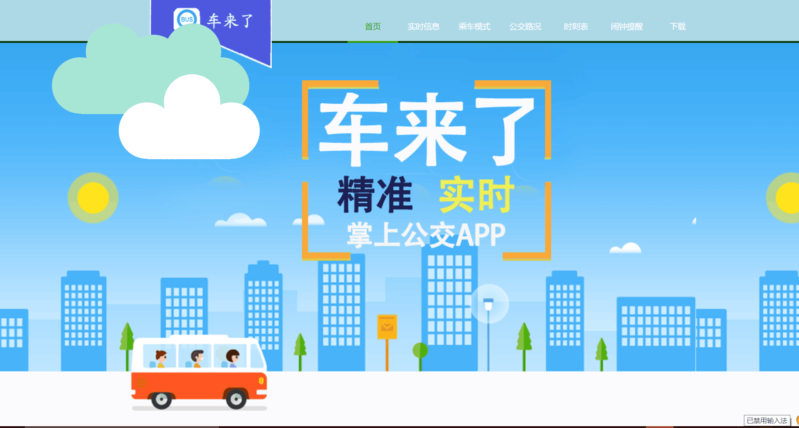

Web程序设计课程答辩
项目:
BUS IS COMING
成员:
刘庆
许承瑶
目录
- 发现
- 架构
- 问题
- 不足
- 心得

互联网时代下人们的出行更为便捷，除了打车效率的提高以外，实时公交也被认为是移动出行下一个蓝海。
“车来了”是一款查询公交车实时位置的手机软件。不仅能提供公交车的到站距离、预计到站时间，还能显示整条公交线路的通行状况，让用户不再盲目等待，有效缓解用户候车的不安全感，同时改变用户出行方式。
架构
首页作为门面，先选择呼应的背景。
颜色的选择及他们之间的搭配，其实对于网站的整体十分重要。在尝试了很多种颜色后，我们决定以蓝色为主色调，清新明亮。

问题

不足
- 基础知识不足，无法独立完成编辑，需要参照
- 创新不够，大部分资源搜索而来
- 完成效率不高，团队合作会有问题出现
- 该网页只能做到说明，却无法实现动态操作，缺乏与用户的交互。

心得
实在的，作为课程的大作业，有些方面心有余而力不足。
结果虽然不尽人意，但是可喜的是逐步克服种种困难的过程，
让我们收获很多，成长很多。
可以看到 web课程我们也已经学习了快一整个学期，
自身的掌握和平常的训练都还有待加强，需要加倍努力。
同时，经过这次项目我们对于web设计也有了更深的认知与体验。